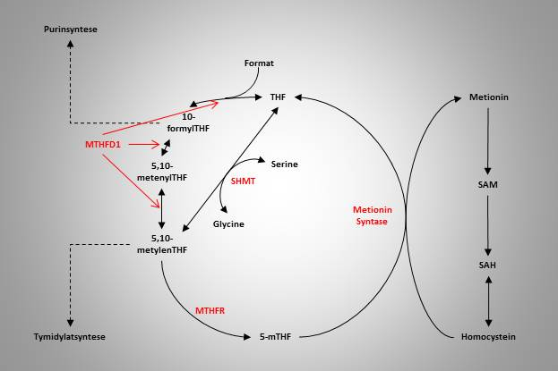
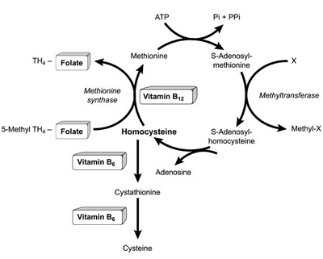

Folat, vitamin B9
Tilbake til artikkelserien om næringsstoffene
Folat er det nest siste av de åtte B-vitaminene, og har også benevningen vitamin B9. Dette vitaminet er veldig sentralt i enkarbonmetabolismen, og har som sin hovedfunksjon å overlevere enkarbonenheter som blant annet benyttes til syntese av DNA/RNA og i remetylering av homocystein, en risikofaktor for en rekke sykdommer. Gravide bør få i seg nok folat for å forebygge nevralrørsdefekter hos barnet.
Vitamin B9 har mange navn, men det vanligste begrepet er folat. I kroppen finner vi vitaminet i forskjellige varianter, blant annet den reduserte formen, tetrahydrofolat (THF), som er den aktive varianten. Folat består kjemisk av en para-aminobenzosyre bundet til pteridinring og et glutamatmolekyl. Det kan bindes opp til ti ekstra glutamatmolekylder til THF, og når vitaminet omtales i polyglutamatform betyr det at det er mer enn ett glutamatmolekyl.
Opptak og metabolisme
Folat finnes i kosten hovedsakelig som THF bundet til en metyl eller formyl-gruppe. Et enzym i tarmen spalter av THF, slik at det kan absorberes. Opptaket av folat og THF skjer via et nylig oppdaget transportprotein som heter PCFT (Proteinbundet folattransporter). Den reduserte formen, THF, kan også tas opp via et transportprotein som heter RFT (redusert folat transporter). THF må reduseres til sin monoglutamatform før opptak, og denne reaksjonen er katalysert av enzymet glutamat karboksypeptidase 2, som spalter av overflødige glutamatmolekyler. Dette enzymet er avhengig av pH rundt 6,5 for å kunne fungere, så opprettholdelse av denne pHen i tarmen er essensielt for opptak av folat. Uredusert folat (som fra tilskudd) kan tas opp ved passiv diffusjon dersom dosene er høye nok.
Inne i tarmcellene hektes det vanligvis på en enkarbonenhet, hovedsakelig metyl, før et bærermediert transportsystem frakter vitaminet over i portåren, som frakter det til leveren. Dette er felles for naturlig og syntetisk folat.
I leveren kan begrensede mengder folat lagres. THF bindes da til en polyglutamatkjede, og på denne måten holdes det tilbake i levercellene. THF sendes også ut i blodet, der det fraktes til målcellene, enten i fri form eller bundet til uspesifikke proteiner, deriblant albumin. Noe folat sendes tilbake til tarmen sammen med gallen, og tas opp på nytt (enterohepatisk resirkulering).
Målcellene tar opp THF gjennom en redusert folattransporter, RFT, tilsvarende det som skjedde i tarmen. PCFT er også uttrykt i betydelig grad i vev som nyrer, lever og hjerne. Inne i cellene binder THF raskt til en polyglutamatkjede, for å holde vitaminet inne i cellen, og for at vitaminet lettere skal kunne binde til enzymer.
Folatmetabolismen inne i cellen er omfattende, og kalles folatsyklus. Denne er viktig for å regulere de ulike funksjonene folat har. Utgangspunktet for folatsyklus er THF, som kan binde seg til aktiverte enkarbonenheter. Det første steget i folatsyklus er omdanning fra THF til 5,10-metylenTHF, noe som kan skje på to måter. Den første er via enzymkomplekset Metylentetrahydrofolat dehydrogenase 1 (MTHFD1), som i tre steg danner 5,10-metylenTHF via metabolittene 10-formylTHF og 5,10-metenylTHF. Her er det et karbon i form av format som kobles på. Den alternative veien er ved hjelp av enzymet serin-hydroksy-metyltransferase (SHMT), som bruker aminosyren serin som metyldonor og danner glycin.
5,10-metylenTHF kan enten brukes til tymidylatsyntese, eller metaboliseres videre til 5-metylTHF (mTHF) ved hjelp av enzymet metylentetrahydrofolat reduktase (MTHFR). mTHF brukes til remetylering av homocystein, og da frigis THF som da er utgangspunktet for en ny runde i folatsyklus. Figuren under oppsummerer reaksjonene i folatsyklus.

Funksjoner
Folat fungerer som en kofaktor for flere enzymatiske reaksjoner, og vitaminets oppgave er å overføre en enkarbon-enhet fra en forbindelse til en annen. Denne enkarbon-enheten kan være f.eks. en metyl eller metylengruppe. Vitaminet utspiller sin funksjon i cellens cytosol, kjerne eller mitokondrie. Enkarbon-enheten kommer i de fleste tilfeller fra reaksjoner i mitokondriene.
Remetylering av homocystein skjer ved at en metylgruppe overføres fra mTHF, som i prosessen blir redusert til THF. Denne prosessen katalyseres av metionin syntase, og er viktig for at det ikke skal samle seg opp store mengder homocystein i blodet, som blant annet er en etablert risikofaktor for utvikling av hjerte- og karsykdommer. Remetylering av homocystein er også avhengig av vitamin B12 i form av metylkobalamin, som overfører metylgruppen fra folat til homocystein.

Remetylering av homocystein til metionin er en veldig viktig reaksjon. Metionin kan aktiveres til S-Adenosylmetionin (SAM), som er kroppens primære metyldonor. SAM er involvert i over 100 reaksjoner i kroppen, inkludert metylering av DNA, og er dermed sentral for å regulere genuttrykket. Etter at SAM har gitt fra seg en metylgruppe vil den gjennom noen reaksjoner reduseres til homocystein, som ved hjelp av metyl-THF igjen kan remetyleres til metionin.
Syntese av puriner og pyrimidiner, som er baser i DNA og RNA er avhengig av overføring av et formyl- eller metylen-molekyl. FormylTHF eller MetylenTHF overfører dette molekylet, og er derfor viktig i syntesen av både DNA og RNA. Dette er sentralt i celledelingen, der nytt DNA og RNA må produseres.
Omdanning fra en aminosyre til en annen (transaminering) er i mange tilfeller avhengig av THF. Dette er viktig i proteinsyntesen, for at kroppen skal kunne lage de aminosyrene den trenger for oppbygging.
Behov og anbefalinger
Minimumsbehovet for folat er beregnet til ca 1µg/kg kroppsvekt. Gjennomsnittlig biotilgjengelighet for vitaminet er anslått til å være 50%, noe som gjør at gjennomsnittsbehovet er satt til 2µg/kg kroppsvekt. Biotilgjengeligheten av syntetisk folattilskudd er imidlertid høyere.
De norske anbefalingene er satt til 300µg/dag for voksne, og opp til 400µg for gravide. Det er anbefalt tilskudd før planlagt graviditet, og i de første 2-3mnd av svangerskapet. 300µg tilsvarer mengden i ca. 150g brokkoli, 75g bønner eller 50g lever.
Mangeltilstander
Folat finnes i de fleste matvarer, og en mangel skyldes ofte et dårlig kosthold generelt, og ikke utelukkelse av enkelte matvaregrupper. Malabsorbsjonstilstander, cøliaki og kronisk alkoholisme kan føre til redusert opptak, og dermed økt behov. Nyresvikt kan også være en årsak, da mer folat vil skilles ut.
Mangel på folat fører til redusert DNA-syntese, som gir redusert celledeling. Dette kan øke nedbrytningen av vev. Celler med kort levetid er spesielt utsatt. Nydanninge av røde blodceller skjer hurtig og er dermed spesielt utsatt.
Megaloblastisk anemi, en form for makrocytisk anemi, som kjennetegnes ved forstørrede røde blodceller, kan skyldes mangel på folat. Disse blodcellene er umodne og dysfunksjonelle som følge av en manglende DNA-syntese.
Økte nivåer av folat kan skjule en anemi som skyldes mangel på B12, så dette bør undersøkes før folatbehandling settes i gang.
Nevralrørsdefekter, som er en medfødt misdannelse, skyldes at lukkingen av nevralrøret i ryggmargen er ufullstendig, og kan skyldes folatmangel. Denne prosessen skjer de første 30 dagene etter befruktning, og det er derfor viktig med tilstrekkelig folatinntak ved graviditet, og dette er grunnen til at gravide anbefales folattilskudd, også før planlagt graviditet. Selv om folattilskudd er vist å redusere risikoen for nevralrørsdefekter, er mekanismene foreløpig lite kjent.
Forhøyet nivå av homocystein henger sammen med folatmangel. Dette er som sagt en prediktor for utviklingen av hjerte- og karsykdommer, men reduksjon av homocysteinnivåene ved hjelp av folat alene eller sammen med andre vitaminer, har ikke vist seg å redusere risikoen for disse sykdommene.
Folat er også satt i sammenheng med kreft, og det er flere foreslåtte mekanismer. Siden folat er viktig for syntesen av puriner og pyrimidiner er det foreslått at mangel kan øke risikoen for mutasjoner i DNA. Folat er også sentral i enkarbonmetabolismen, og dermed metylering av DNA. Dette kan øke kreftrisikoen gjennom epigenetiske mekanismer.
Kan vi få for mye?
Det er ikke observert noen uheldige effekter av et høyt folatinntak hos friske. Øvre grense for inntak er likevel satt til 1000µg/dag, siden et høyt inntak kan skjule en mangel på B12.
Det er bred enighet om at folatoverskudd kan akselerere kreftutvikling hos de med kreft, siden folat er viktig for celledeling.
Gode kilder
Folat finnes som sagt i de aller fleste matvarer. Høyest konsentrasjon finner vi i grønne bladgrønnsaker som spinat, brokkoli og rosenkål, lever, peanøtter og bønner. Meieriprodukter, kjøtt, fisk og fugl inneholder også vitaminet.
Jo lengre ned i tarmen vi kommer, jo lettere tas folat opp ved diffusjon, noe som forklarer hvorfor biotilgjengeligheten til fritt folat er tilnærmet 100%. Dette gjør at alt folat fra tilskudd tas opp.
Artikkelen er sist oppdatert oktober 2013